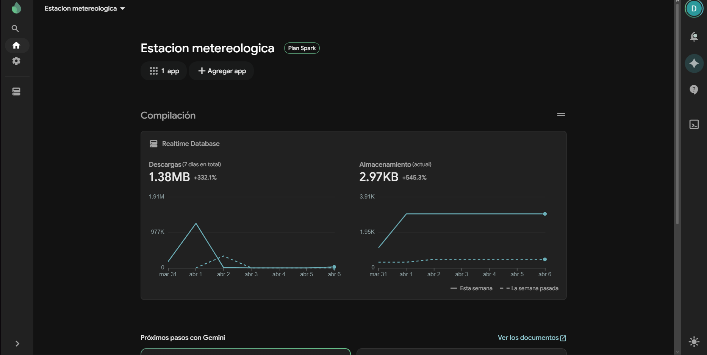
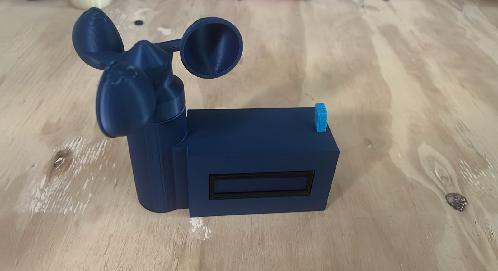

RESUMEN EJECUTIVO
Diseño e implementación de una red de monitorización ambiental basada en ESP32. El sistema integra sensores de alta precisión con infraestructura Serverless en tiempo real mediante Firebase. Telemetría resiliente para entornos críticos.
ARQUITECTURA DE DATOS
"stack": {
"runtime": "Arduino-C++",
"encryption": "SSL/TLS",
"latency": "~120ms"
}
DASHBOARD & MÉTRICAS

UPTIME
99.98% de disponibilidad
SAMPLING
1 lect/min (Histórico)
DIAGRAMA ELÉCTRICO
- [SDA/SCL] → Bus I2C @400kHz
- [ADC6] → Divisor de Voltaje | Ref: GND
- [GPIO4] → OneWire Protocol | DHT22
DIAGRAMA DE OPERACIÓN
SENSORES → ESP32 → CLOUD → WEB
Calibración mediante comparación directa con estación meteorológica certificada. Error cuadrático medio (MSE) de 0.42.

Integración Hardware-Software
VALIDACIÓN EN ENTORNO OPERATIVO
INSTRUMENTACIÓN
DHT22 DIGITAL
Humedad ±2% | Temp ±0.5°C
V-ANEMÓMETRO
Transductor de flujo ADC
METODOLOGÍA DE MANUFACTURA
FDM (PLA+): Boquilla 0.4mm, Capa 0.2mm, Relleno 20%. Slicing: Cura Engine. T° Boquilla: 210°C, Cama: 60°C.
ESPECIFICACIONES
RF-RANGE
75m (LOS)
STACK
FreeRTOS / ESP-IDF
REFERENCIAS & CONCLUSIÓN
IEEE Std 2413-2019 (Architectural Framework for IoT).
LIVE DASHBOARD
Escanee para ver telemetría activa vía GitHub Pages.